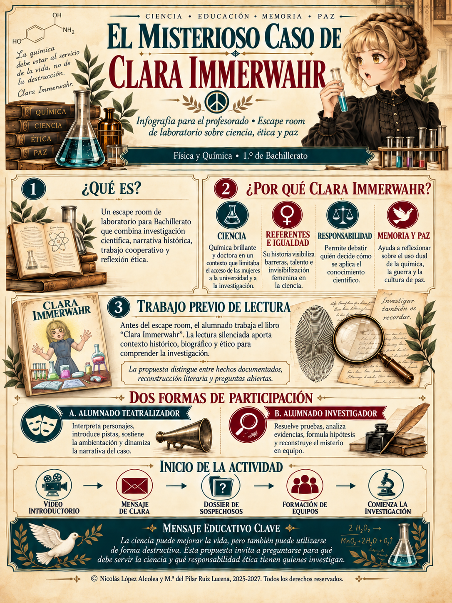
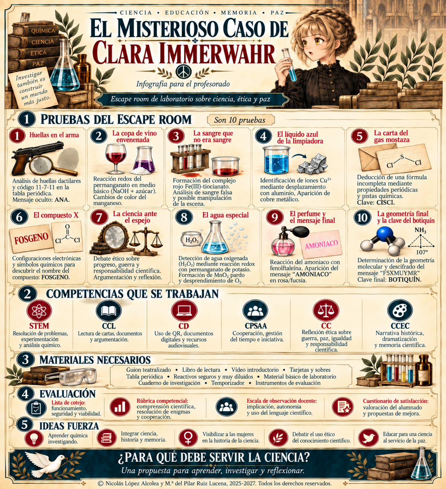

← Volver a la preparación
Infografías originales del profesorado
Cinco documentos visuales para presentar el proyecto y preparar las diez pruebas. Pulsa cada imagen para ampliarla.
¿Por qué Clara Immerwahr?

Ver imagen a tamaño completo ↗
Visión general del escape room

Ver imagen a tamaño completo ↗
Preparación de las pruebas 1, 2 y 3

Ver imagen a tamaño completo ↗
Preparación de las pruebas 4, 5 y 6

Ver imagen a tamaño completo ↗
Preparación de las pruebas 7, 8, 9 y 10

Ver imagen a tamaño completo ↗